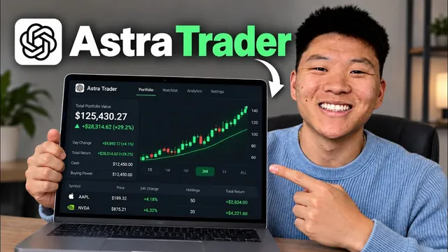

GPT-6 Astra를 24시간 주식 트레이더로 만들었다

원본 영상 보기 →
- 연속성은 기억이 아니라 공유된 기록에서 나옵니다
- 무엇을 맡길지 먼저 정하세요 — 판단 자체냐, 실행 속도냐
- 위험한 자동화일수록 실패 시나리오를 먼저 설계하세요
한 줄 요약
Nate Herk가 클로드에게 실제 돈 1만 달러를 주고 주식 거래를 맡겨 한 달 만에 S&P 수익률을 8% 넘게 앞섰어요. 이번엔 더 강력해진 GPT-6 아스트라로 같은 실험을 다시 하려고 24시간 트레이딩 에이전트를 세팅합니다. 전략 수립부터 하루 6회 실행 일정, 진행 로그로 만드는 연속성, Alpaca 연결, 예약 작업 6개, 알림까지 전부 자연어 대화만으로 구성해요.
전체 내용 정리
왜 다시 도전할까요
Nate Herk는 최근 클로드에게 자기 실제 돈 1만 달러를 맡겨 주식을 거래하게 하는 챌린지를 했고, 한 달이 지난 시점에 S&P 수익률을 8% 넘게 앞서고 있어 인상 깊었다고 합니다.
이번에는 더 강력해진 GPT-6 아스트라가 나왔으니 같은 실험을 반복하려 해요. 1만 달러 챌린지를 본격적으로 시작하기 전에 아스트라를 24시간 거래 비서로 세팅하는 방법을 먼저 공개합니다.
다만 분명히 못 박아요. 이건 투자 조언이 아닙니다. 에이전트에게 1만 달러를 주고 거래시키라는 권유가 아니라, 모의 투자로 먼저 자기 전략을 세운 뒤 그 일부만 자동화해 보라는 거예요. 이미 매일 꾸준히 거래하는 사람이라면 AI로 더 많은 정보를 얻거나, 주식 창을 계속 들여다보지 않고도 상황을 모니터링하는 용도로 쓰라고 권합니다.
활용 방향이 두 갈래예요
하나는 트레이딩 전략이 딱히 없어서 조사와 고민을 AI 에이전트에게 통째로 맡기고 싶은 경우입니다.
다른 하나는 이미 매일 꾸준히 거래하고 있는데 더 빠르게 움직이거나 깜빡하는 일을 방지하고 싶은 경우고요.
Nate Herk 본인은 그 고민을 외부화하고 싶어서 아스트라가 전략을 세우게 했고, 자신은 방향만 잡아 주는 역할을 합니다.
꾸준히 거래하는 분이라면 이렇게 해보세요. 장 시작과 장 마감 때 무엇을 하는지, 장이 열리기 전과 열리고 한 시간 뒤, 장 마감 직전에 각각 무엇을 확인하는지를 하루 일정으로 정리해 보는 겁니다. 그래야 특정 시간에 그 일을 대신할 에이전트를 만들어 붙일 수 있어요.
대화만으로 전략과 일정을 뽑아냈어요
처음에는 그냥 아스트라와 대화를 나누는 것으로 시작했습니다.
"이런 챌린지를 하려고 한다", "새 전략을 써 보고 싶어서 좀 더 위험할 수도 있다", "7일 안에 수익을 내야 한다"고 말한 뒤 방대한 조사를 부탁했어요. 그랬더니 아스트라가 하위 에이전트 10개를 가동해 엄청난 양의 정보를 조사해 왔고, 전략을 논의한 긴 문서에 그 리서치가 통합됐습니다.
전략은 1만 달러, 7 거래일, 하루 6번 체크라는 세 가지 제약 조건으로 세웠어요.
결과로 나온 일정은 이렇습니다(중부 표준시 기준).
| 시각 | 할 일 | |---|---| | 오전 7:45 | 뉴스를 읽고 계좌 확인, 주시할 종목 선정 | | 오전 9:30 | 첫 유효 거래 탐색 | | 오전 11:00 | 포지션 검토, 마지막 신규 거래 고려 | | 오후 1:00 | 기존 포지션 관리 | | 오후 2:15 | 남은 포지션 모두 정리 | | 오후 2:45 | 모든 포지션 종료 확인, 당일 수익 기록 |
장기 투자보다는 단타 위주 전략인 셈이에요. 매 거래일 이 일정대로 작업이 돌아가는 게 7일 챌린지용 24시간 트레이더를 만드는 방식입니다.
연속성은 기억이 아니라 공유된 기록에서 나와요
Nate Herk가 특히 강조하는 부분입니다.
이 에이전트들은 깨어날 때마다 상태 정보가 초기화돼요. 그래서 에이전트가 프로젝트를 읽고 포트폴리오를 확인하며 무엇을 해야 할지 맥락을 스스로 파악하도록 만들어야 합니다.
그가 이 문제를 푸는 방법은 모든 작업이 끝날 때마다 진행 상황 로그를 남기는 것이에요.
에이전트가 깨어나 작업을 시작할 때 오늘 한 일과 다음에 할 일을 명시하게 하면, 다음 에이전트가 깨어나 그 출력을 읽고 자기 일을 수행한 뒤 다시 기록을 남깁니다. 이렇게 여러 개의 고립된 작업자가 아니라 하나의 트레이딩 에이전트처럼 계속 작동하는 루프가 만들어져요.
문서에는 이렇게 적혀 있습니다. "연속성은 AI가 대화를 기억하는 것이 아니라 공유된 기록에서 나온다."
흐름은 이래요. 매번 전략과 이전 작업을 읽고, 거래 중인 Alpaca를 확인해 실제 상황을 파악하고, 할당된 업무를 수행한 뒤, 현재 계좌 상태와 진행 로그를 업데이트하고 다음 작업을 위한 명확한 지침을 남깁니다. 중요한 작업은 실행 즉시 기록되므로 작업이 중단돼도 거래를 실수로 반복하지 않고 복구할 수 있어요.
아스트라와 함께 오류 상황도 브레인스토밍했습니다. 첫 실행 시 이전 진행 기록이 없는 경우, 다음 모델에 대화 내역이 없는 경우, 이전 실행이 주문 전송 후 충돌한 경우, 두 실행이 겹치는 경우, 데이터가 누락되거나 손상된 경우, 기기나 앱이 오프라인 상태가 되는 경우 등이요.
Alpaca 연결과 보안
다음은 브로커인 Alpaca 연결입니다.
Alpaca는 계정을 만들면 모의 투자 계정도 함께 생성되는데, 실제 주식 시세를 그대로 따르지만 돈은 가짜예요. 몇 주에서 몇 달간 에이전트에게 대신 거래하게 하며 전략에 익숙해진 뒤 실제 자금으로 전환할 수 있습니다.
API 키 항목에서 엔드포인트와 시크릿 키를 받는데, 이 키는 거래 계좌의 비밀번호와 같으므로 누구에게도 알려 주면 안 되고 Codex 채팅 창에 그대로 입력해서도 안 돼요. 대신 .env 파일을 생성해 거기에 넣으라고 요청하면 됩니다.
Nate Herk는 이 트레이딩 챌린지를 자신의 AIOS 안 별도 폴더로 분리해 뒀어요. 트레이딩 봇이 사업이나 다른 프로젝트 정보에 영향받지 않도록 프로젝트를 격리한 겁니다.
그는 Alpaca의 월 99달러짜리 시장 데이터 플랜을 써서 실시간 시세와 분당 API 호출 한도를 늘렸는데, 클로드로 1만 달러 챌린지를 했을 때는 이런 유료 플랜 없이 웹 리서치나 2차 자료만 썼다고 해요. 이번엔 7일이라는 짧은 기간이라 실시간에 가까운 데이터가 필요해서 지불한 거고, 반드시 따라 할 필요는 없습니다.
예약 작업 6개와 알림
마지막은 예약 작업 구축이에요.
예약 작업에는 로컬 방식과 클라우드 방식이 있습니다. 클라우드는 기기가 오프라인이어도 실행되는 장점이 있지만 채팅·프로젝트·모델·추론 설정을 고를 수 없어서 이번 챌린지에는 맞지 않아요. 그래서 로컬 방식으로 프로젝트를 직접 선택하고 모델은 GPT-6 아스트라, 추론 설정은 '높음'으로 유지합니다.
또 매 실행이 동일한 대화 스레드에서 돌아가게 설정하면 대화 기록이 쌓여요. Codex의 자동 압축 기능이 좋아 컨텍스트 한계에 거의 부딪히지 않습니다.
Nate Herk는 '트레이딩 챌린지'라는 새 프로젝트에 스레드를 하나 만들고, 6개의 예약 작업이 모두 이 하나의 스레드에서 실행되도록 각 작업 설정 시 그 채팅을 선택했어요. 이 세팅도 아스트라에게 자연어로 지시했고, 아스트라가 스레드를 찾아 6개 작업을 모두 연결했습니다.
각 예약 작업에는 올바른 폴더와 파일 위치, 해야 할 일, 그리고 공유된 시작·종료 핸드오프를 따르고 변경 사항을 저장하며 실제 결과·잔여 위험·미해결 문제·다음 작업을 안내하라는 지침이 들어가요.
여기에 더해 실패 시 알림을 받기 위해 오후 1시와 오후 3시 15분에 예약 작업 두 개를 추가로 만들어, 하루 중간 점검과 장 마감 후 요약을 ClickUp DM으로 보내게 했습니다. 거래가 없을 때도 보고서가 전송되는지 테스트해 확인했고요.
마지막으로 휴대폰 화면을 데스크톱에 미러링하고 '원격'으로 접속하면, 집 밖에서도 에이전트들이 어떻게 돌아가는지 확인할 수 있어요.
핵심 인사이트
- 연속성은 기억이 아니라 공유된 기록에서 나옵니다: 에이전트는 깨어날 때마다 상태가 초기화되므로, 매 작업 끝에 "오늘 한 일 + 다음에 할 일" 로그를 남기게 하고 다음 실행이 그걸 읽고 이어가게 하면 여러 실행이 하나의 일꾼처럼 움직여요. 반복 업무를 여러 시점에 나눠 자동화할 때 그대로 쓸 수 있는 설계입니다.
- 무엇을 맡길지 먼저 정하세요 — 판단 자체냐, 실행 속도냐: 전략이 없으면 리서치와 의사결정까지 외부화하고, 이미 방식이 있으면 속도와 누락 방지만 맡깁니다. 본인은 방향만 잡는 위치에 선다는 역할 분리가 핵심이에요.
- 위험한 자동화일수록 실패 시나리오를 먼저 설계하세요: 중간 중단, 중복 실행, 데이터 손상, 기기 오프라인 등 깨질 수 있는 경우를 미리 목록화하고, 손실이 없는 환경에서 관찰 기간을 둔 뒤에야 실제로 전환합니다.
오늘 당장 해볼 것
- 반복적으로 하는 업무 하나의 하루 일과를 "시작 / 중간 / 마감"처럼 시간대로 쪼개, 각 시간에 어떤 판단을 내리는지 3~6줄로 적어 보세요. 나중에 그 시간대를 대신할 에이전트를 맡길 단위가 됩니다.
- 자동화를 업체에 맡길 때 "매 실행마다 무엇을 했고 다음에 무엇을 할지 진행 로그를 남기고, 다음 실행이 그 로그부터 읽고 이어가게 해 달라"고 명세로 요구하세요. 결과물보다 연속성 설계를 먼저 요청하는 겁니다.
- 돈이나 계약처럼 되돌리기 어려운 자동화라면, 먼저 "실패 시나리오 목록"을 뽑아 달라고 하고 손실 없는 환경에서 최소 1~2주 관찰 기간을 둔 뒤 실제 전환 여부를 판단하세요.